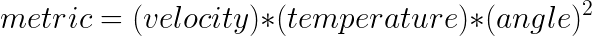
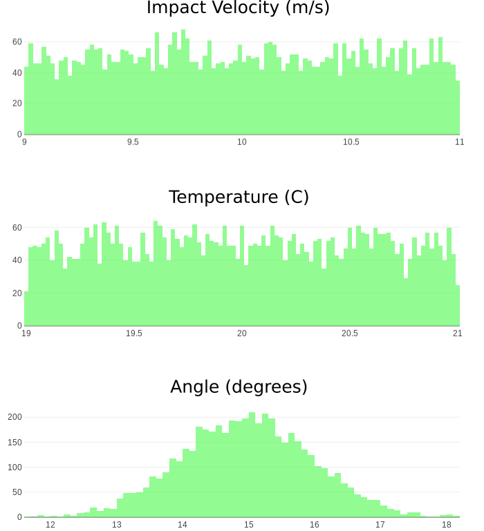
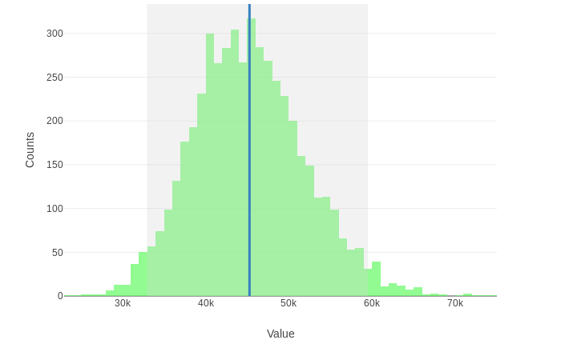

Monte Carlo Error Analysis
David Scripka, 2017
Uncertainty quantification is an essential component of many types of data analysis. A particularly important example is the propagation of uncertainty (also called error propagation), which combines variables and individual uncertainties in any arbitrary function in a statistically correct way. This conveniently produces a not only a final value of interest (based on the function) but also a final uncertainty associated with that value. A common way to combine uncertainty in this manner is with the propagation of error formula:

While simple and intuitive, this method does make several important assumptions that may or may not be true for many applications.
1) A linear approximation for the partial derivative of the function is assumed. For highly non-linear functions, this can be inaccurate.
2) The individual standard deviations (si) for each variable are assumed to be relatively small compared to the corresponding partial derivatives.
3) Correlations between variables in the function are ignored
In general, the error propagation method is appropriate if there is sufficient data available to clearly define the standard deviation of the individual variables, as well as the curvature of each partial derivative. Unfortunately, there are many cases where few (or none!) of these assumptions are valid. One particular example is “single-shot” type data, where only a few important variables can be collected, often with only a single sample from the underlying distributions and with individual variable uncertainties ranging significantly in magnitude. An accurate measure of uncertainty is difficult in these cases, but is often required in order to make the most of relatively few data points.
In such cases, a more flexible, method of uncertainty quantification can be used. Based on repeated random sampling of estimated variable distributions (e.g. a monte carlo-type approach) informed from domain knowledge, a final distribution of values can be generated empirically from the random sampling. One important note: this process propagates uncertainty only for the data associated with a single event, experiment, or sample. Little information can be gained about the likely behavior of other events/experiments/samples (even those that are similar), as each represents a independent selection from an unknown underlying population distribution. Nevertheless, when intelligently combined with domain knowledge, the individual uncertainties of single data points can still be very useful.
Example Calculation
As an example, consider the evaluation of a high-strength aluminum aircraft component subjected to an extreme impact event, such as that experienced during an emergency landing of the aircraft. This type of test is most likely destructive, and thus the real-time data measured during the experiment is needed to evaluate the accuracy of some combined performance metric. Let's assume that the metric of interest is some arbitrary combination of impact velocity, temperature, and angle of impact:

We can also assume that based on the capabilities of the measurement equipment, the impact velocity can be measured to an accuracy of +- 10% and temperature to +- 5%. Angle is more complicated, and must be estimated by hand from high-speed camera images. A skilled technician is confident that she can identify the angle from the images to within +- 2 degrees.
This information is not yet sufficient to perform the monte carlo uncertainty estimation of the final metric. While the accuracy of each individual variable is known, the underlying distributions are not. It is necessary to use domain knowledge in this case to make an informed estimate of the distributions.
In many cases, a reasonable and conservative assumption for the +- 10% and +- 5% errors in impact velocity and temperature is an underlying uniform distribution centered on the measured value. However, the angle measurement is arguable more important, as it is to a power of two in the final metric equation, and will have a disproportionate effect on the accuracy of the measure. The technician notes that from her experience calibrating the camera with known angle measurements, the uncertainty is roughly normally distributed for any given experiment, with the +-2 degrees representing the standard deviation of the normal distribution.
With these informed estimates, the monte carlo uncertainty can be calculated by sampling from each variable's underlying distribution n times, and then calculating the final metric n times. The distribution of the n metric values defines the monte carlo distribution, and uncertainty can then be defined via the standard deviation, confidence intervals, or other statistical measures of this final distribution. The plots below show the individual distributions for each variable.

The combination of these distributions will produce the final distribution below, where the blue line is the distribution mean and the shaded gray area is the empirical 95% confidence interval.

While this distribution looks fairly normal (thanks to the central limit theorem), this may not always be the case. Additionally, the distribution is slightly skewed to the right, and the 95% confidence interval is not symmetric about the mean. This type of detail can be very important in many contexts, such as a meeting a minimum safety factor in engineering applications.
Use the tool below to explore further by entering your own function and variable distributions!